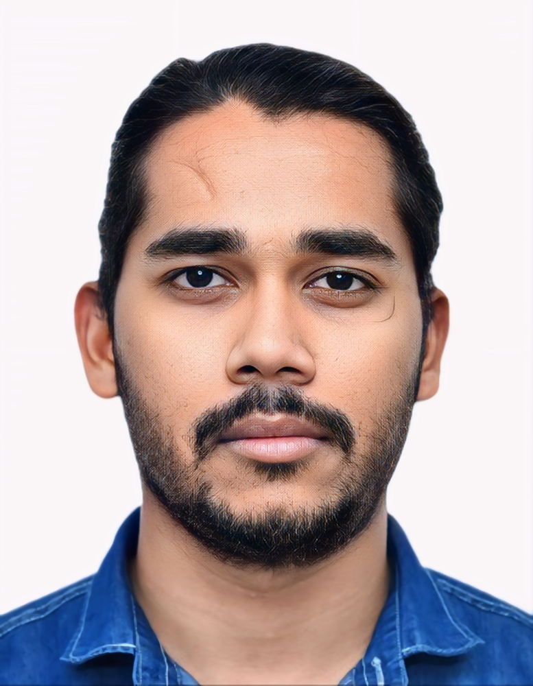
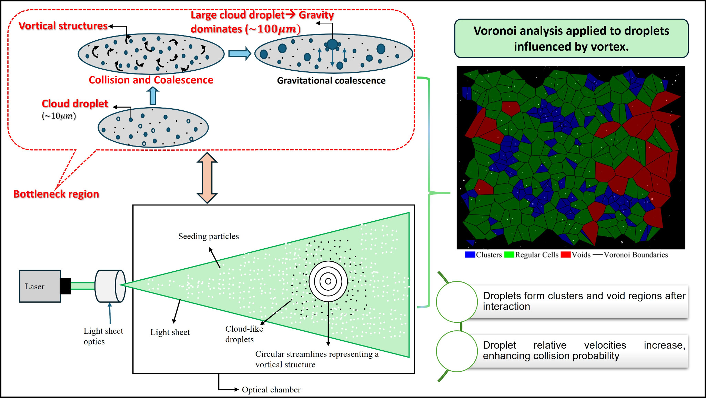

I work on the physics of droplet transport in vortical and turbulent flows, with emphasis on how coherent vortical structures and turbulent shear redistribute inertial droplets, generate preferential concentration, modify relative motion, and influence clustering, collision, and coalescence. My experiments combine canonical air vortex rings and turbulent boundary layers with high-speed shadowgraphy, time-resolved PIV/PTV, and MATLAB-based analysis to connect vortex-scale mechanisms with cloud-microphysics-relevant statistics.

Department: Applied Mechanics, IIT Delhi
Lab: FE2B Fluids Lab for Environment, Engineering, and Biology
Focus: Droplet-vortex interaction, clustering, collision-coalescence, and turbulent boundary layer experiments
Methods: High-speed imaging, TR-PIV, PTV, shadowgraphy, and MATLAB-based analysis
I am a PMRF Scholar in the Department of Applied Mechanics at the Indian Institute of Technology Delhi, working under Prof. Narsing Kumar Jha. My research lies at the interface of experimental fluid mechanics, multiphase turbulence, and cloud microphysics.
The central objective of my doctoral work is to understand how coherent vortical structures and turbulent shear organize droplets in space and time, and how this organization affects clustering, dispersion, relative velocities, collision, and coalescence.
I use canonical vortex rings as controlled coherent structures to isolate droplet-vorticity interaction physics, and then extend the study to turbulent boundary layers where multiple vortical structures coexist. This allows direct experimental observability while still connecting to broader turbulence and cloud-physics questions.
My work combines high-speed shadowgraphy, time-resolved PIV/PTV, and MATLAB-based statistical diagnostics, including Voronoi analysis, to study droplet redistribution, preferential concentration, cluster/void dynamics, and collision-promoting events.
The work combines controlled coherent-vortex experiments with statistically richer turbulent-boundary-layer experiments to study droplet transport, clustering, and collision-relevant dynamics across scales.
Canonical air vortex rings are used to isolate how droplets respond to coherent vortical structures, with direct control over circulation, core evolution, and flow timescales.
Spatial organization is quantified using Voronoi analysis, including PDFs of normalized cell areas, cluster and void characterization, and relative clustering measures.
Droplet redistribution, preferential concentration, and enhanced relative motion are connected to collision-promoting events and coalescence-relevant mechanisms.
The study is extended from isolated vortices to shear turbulence, where multiple vortical structures coexist and interact with droplets in a more realistic laboratory flow.

The broader scientific question is how coherent vortical structures and turbulence organize inertial droplets in space and time. The present framework starts with well-defined vortex rings to isolate physics cleanly, then moves toward turbulent boundary layers to approach more realistic shear turbulence. This experimental route helps connect vortex-scale observables with turbulence-scale statistics relevant to warm-cloud bottleneck physics.
All links below point to local PDF files included with this website package. After you upload this folder to a web host, these links will open directly in the browser.
2nd European Fluid Dynamics Conference, University College Dublin, Dublin, Ireland, 26-29 August 2025.
Paper ID: FMFP2025-MPF-274. Nirma University, Gujarat, India, 19-21 December 2025.
I am interested in discussions around droplet dynamics, vortex dynamics, turbulence, cloud microphysics, experimental multiphase flows, and measurement-driven fluid mechanics.
Department: Applied Mechanics, IIT Delhi
Supervisor: Prof. Narsing Kumar Jha
Lab: FE2B Fluids Lab for Environment, Engineering, and Biology
Project: Experimental study of droplets interacting with coherent vortical structures and turbulent boundary layers